📑 Dans cette page (10 sections)
🏷️ Nom du site
%%{init: {"theme":"base","themeVariables":{"primaryColor":"#0f2130","primaryTextColor":"#e6eef5","primaryBorderColor":"#5fd0ff","lineColor":"#3d89ab","secondaryColor":"#1a0d14","tertiaryColor":"#0b1824","edgeLabelBackground":"#0f2130","fontFamily":"ui-monospace, Menlo, Consolas, monospace","noteBkgColor":"#1a0d14","noteTextColor":"#ffb4bb","actorBkg":"#0f2130","actorBorder":"#5fd0ff","actorTextColor":"#e6eef5","signalColor":"#3d89ab","signalTextColor":"#3d89ab","labelBoxBkgColor":"#0f2130","labelTextColor":"#e6eef5","loopTextColor":"#3d89ab"}}}%%
mindmap
root((🎨 Personnalisation))
🏷️ Identité
SITE_NAME
Logo et favicon
🏛️ Départements
SECTIONS dans app.py
🎨 Thème
Variables CSS
Polices
✨ Animations
Désactiver
Réduire
📝 Textes
home.html
base.html
Variable SITE_NAME (titre, en-tête, flux RSS). Les textes fixes (slogan, pied de page) sont dans templates/base.html.
🏛️ Départements
Dans app.py, dictionnaire SECTIONS :
SECTIONS = {
"dossiers-scp": {"label": "Dossiers SCP", "icon": "◉", "desc": "Entités, objets et phénomènes anormaux."},
...
}
- Ajouter : nouvelle entrée (clé = slug en minuscules sans espaces). Aucune autre modification : menu, accueil, filtres et éditeur s'adaptent. La grille de l'accueil est prévue pour 5 colonnes (voir
.dept-griddans le CSS). - Renommer le libellé : change
label. - Changer une clé existante : mets à jour la base :
UPDATE posts SET section='nouvelle-cle' WHERE section='ancienne-cle';(éditeur SQL de Supabase). - Supprimer : ne supprime pas une clé utilisée par des articles (ils feraient planter l'affichage) ; déplace-les d'abord.
🎨 Couleurs et polices
static/css/style.css, bloc :root :
--bg:#05080d; --cyan:#5fd0ff; --red:#ff4d5e; --green:#5dffb0; --amber:#ffb347;
Polices : liens Google Fonts dans templates/base.html + variables --sans, --mono, --disp.
📝 Textes de l'accueil
templates/home.html : titre du héros, accroche, lignes de la séquence de démarrage (data-line), bandeau défilant (.ticker), citation, alerte de sécurité.
✨ Animations
- Tout désactiver : supprime les
<div class="noise">,<div class="scan">debase.htmlet l'élément<canvas id="static">dehome.html. - Réduire : baisse
opacityde.noise, la vitesse de.ticker div(durée demarquee), ou retiredata-tiltdes cartes. - Les visiteurs ayant réglé leur système sur « réduire les animations » n'en voient aucune.
⚠️ Pagination et limites
PER_PAGE(12) dansapp.py.- Limites de requêtes :
default_limitset décorateurs@limiter.limit(...). - Tailles de médias :
MAX_IMAGE_MB,MAX_VIDEO_MB.
🖼️ Logo / favicon
Le logo est un caractère (⛨) dans .brand-mark. Pour une image, remplace ce <span> par <img src="{{ url_for('static', filename='logo.png') }}" ...> et ajuste le CSS. Le favicon est défini dans base.html.
🌍 Langue
Les textes sont en français dans les templates et dans app.py (messages d'erreur, flash). Les dates utilisent le format jj/mm/aaaa (filtre fdate).
📄 Ajouter une page (exemple « À propos »)
@app.route("/a-propos")
def about():
return render_template("about.html")
Puis crée templates/about.html ({% extends "base.html" %}) et ajoute un lien dans la navigation de base.html. Ajoute la page au sitemap si besoin.
🧱 Content-Security-Policy
Si tu ajoutes un service externe (statistiques, polices, widgets), autorise son domaine dans l'en-tête Content-Security-Policy de la fonction headers() de app.py. Pas de script en ligne : place le JavaScript dans static/js/.


◀ 🧬 Architecture · 🩺 Dépannage / FAQ ▶

⛨ SCP Foundation — projet de fan non officiel · contenus SCP sous licence CC BY-SA 3.0 lorsque applicable · ⬆ retour en haut